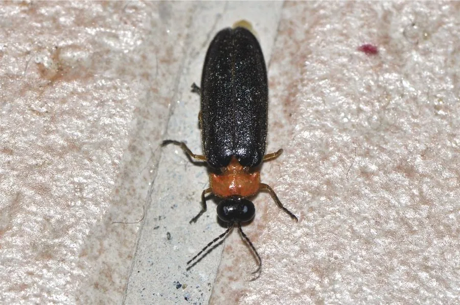

昆虫 · 动物界
端黑萤 Luciola praeusta

翅端呈黑色的水栖型萤火虫，雄虫发橙黄色光，常在稻田和水沟边成群闪烁，是中国南方夏夜常见的萤火虫。
- 分类
- 门节肢动物门纲昆虫纲目鞘翅目科萤科属萤属
- 栖息环境
- 稻田、水沟、池塘边缘和湿润草丛
- 地理分布
- 中国南方，以及日本、东南亚
- 保护级别
- 暂无评估
物种志
端黑萤成虫体长 8–12 mm，体色橙黄，前胸背板中央有黑色斑纹，鞘翅末端呈明显的黑色，因此得名。雄虫的发光器位于腹部末端两节，发出橙黄色至黄绿色的光。
端黑萤分布于中国南方以及日本、东南亚，生活在稻田、水沟、池塘边缘和湿润的草丛中。它的幼虫水生或半水生，在水中捕食螺类和小型水生昆虫。成虫在夏季夜间活动，雄虫低飞并发出有节奏的闪光，雌虫停在水草上回应，形成水边成片的闪烁景象。端黑萤的发光是求偶信号，不同种类的闪光频率不同，可以避免杂交。由于农药、水污染和光污染，端黑萤在许多地方已经消失，是萤火虫保育中具有代表性的物种。
形态与习性
- 食性幼虫在水中捕食螺类和水生昆虫
- 体长8–12 mm
- 特征鞘翅末端呈明显的黑色
- 发光雄虫发橙黄色光，闪光有节奏
- 幼虫水生或半水生，生活在稻田和水沟中
- 威胁农药、水污染和光污染导致种群下降
趣味知识
- 端黑萤的鞘翅末端是黑色的，这个特征让它很容易辨认。
- 不同种萤火虫的闪光频率不同，相当于各自的求偶密码。
- 水田边的端黑萤成群闪烁时，整片水面像撒了一层星光。